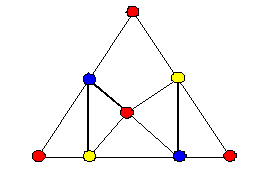
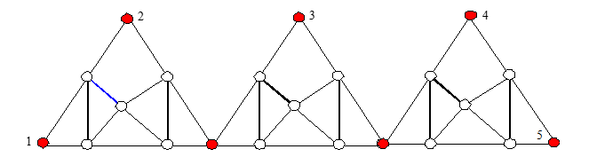
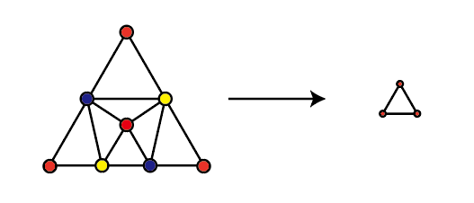
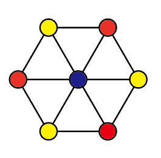
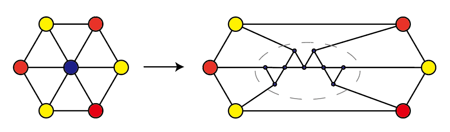

难度： 该问题也是 NPC 问题。
该问题可以通过一般图三着色问题规约到该问题证明。
下面构造一种特殊的图：

会发现该图有一些很良好的性质：
这使得该图可以被简单的叠加在一起，且外围所有的点都具有相同的颜色

当该图 重复三次时，就会有 5 个点一定具有相同的颜色，重复 K 次时，就会有 K+2 个点具有相同的颜色。
那么对于一般图中，顶点度数 大于 4 的点 。可以将该顶点删除，并将原来和该顶点连接在一起的边和重复了 次的边缘点依次连接。
(<-) 这样，当新图存在三着色时，将特殊图边缘的颜色对应到原图中的点的颜色即可
(->) 当原图存在三着色时，构建相应的特殊图，则新图也存在三着色
可以通过一个例子来简单的理解这种操作：
因为我们只利用图 的外围三个点，因此其可以被如下的抽象：

当遇到如下的一般图（存在度大于4的点）时

中间的度为 6 的点可以用重复了 4 次的图 代替：
从而将原图替换为如下的新图，保证每个点的度数不超过 4：
